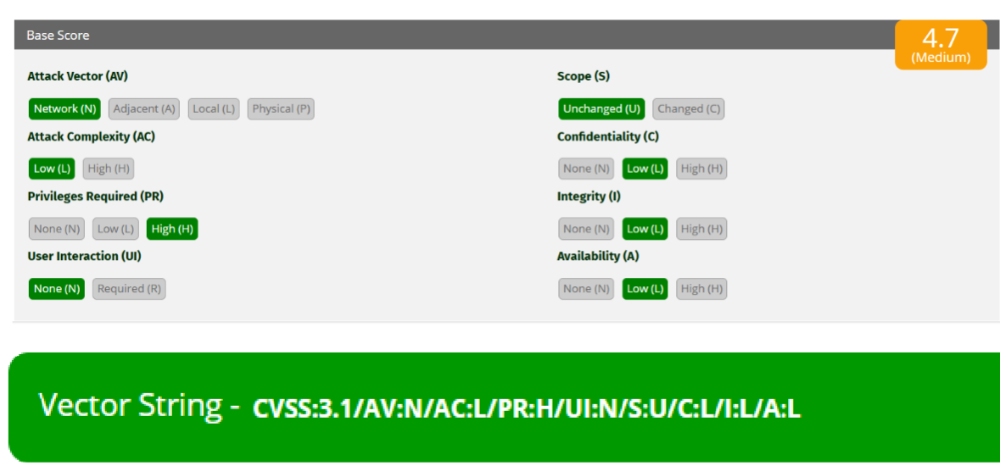
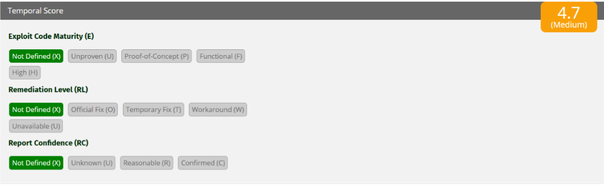
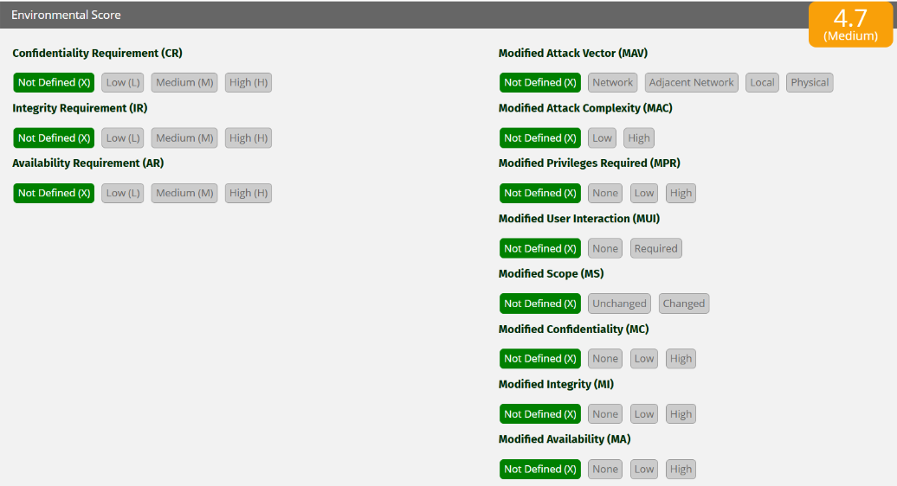

UNIVERSIDAD POLITÉCNICA DE SAN LUIS POTOSÍ
Curso: Núcleo Optativo V: Seguridad Informática
Rodríguez Moreno Cristian Alejandro | Matrícula: 181641
Docente: Mtro. Servando López Contreras | Grupo: T46A
Con base en el escenario proporcionado:



Aunque esta vulnerabilidad necesita privilegios elevados para poder explotarse, sigue siendo importante debido a que un atacante con acceso administrativo o permisos avanzados podría utilizarla para afectar aún más los sistemas internos de la organización. Este tipo de fallas representa un riesgo especialmente en situaciones donde existen cuentas comprometidas, amenazas internas o procesos previos de escalamiento de privilegios.
Quienes podrían aprovecharla serían principalmente usuarios internos malintencionados, administradores comprometidos o atacantes externos que hayan conseguido credenciales privilegiadas mediante técnicas como phishing, filtración de información o ataques de fuerza bruta.
Aunque el impacto en la confidencialidad, integridad y disponibilidad es bajo, esto únicamente indica que no ocasiona daños críticos ni pérdida total de información; aun así, puede generar accesos parciales a datos, cambios menores en el sistema o interrupciones limitadas del servicio, por lo que continúa siendo una vulnerabilidad que requiere atención y mitigación.
Usando la calculadora oficial CVSS v3.1:
El vector:
CVSS:3.1/AV:N/AC:L/PR:H/UI:N/S:U/C:L/I:L/A:L
produce la siguiente puntuación:
Porque según CVSS v3.1:
La vulnerabilidad analizada alcanzó una puntuación de 4.7 en CVSS v3.1, por lo que se considera de nivel medio. A pesar de que para explotarla se requieren privilegios elevados, sigue representando un riesgo importante, ya que podría ser utilizada por usuarios internos maliciosos o por atacantes que hayan obtenido acceso a cuentas privilegiadas.
Asimismo, el hecho de que pueda explotarse remotamente y con baja complejidad técnica aumenta su importancia dentro de la infraestructura de una organización. Aunque las afectaciones en confidencialidad, integridad y disponibilidad son bajas y no implican un daño crítico al sistema, es recomendable implementar controles de seguridad, supervisión de cuentas con altos privilegios y estrategias de mitigación que ayuden a disminuir la probabilidad de explotación.